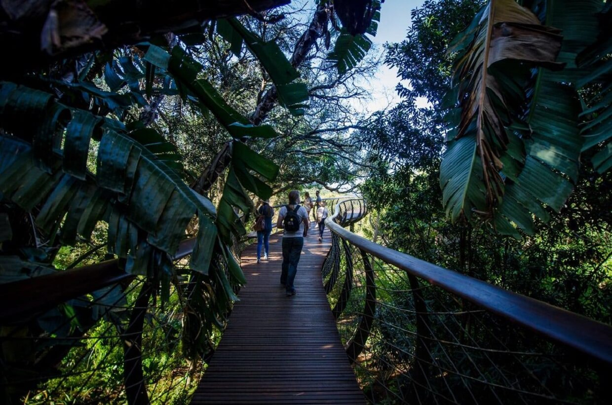
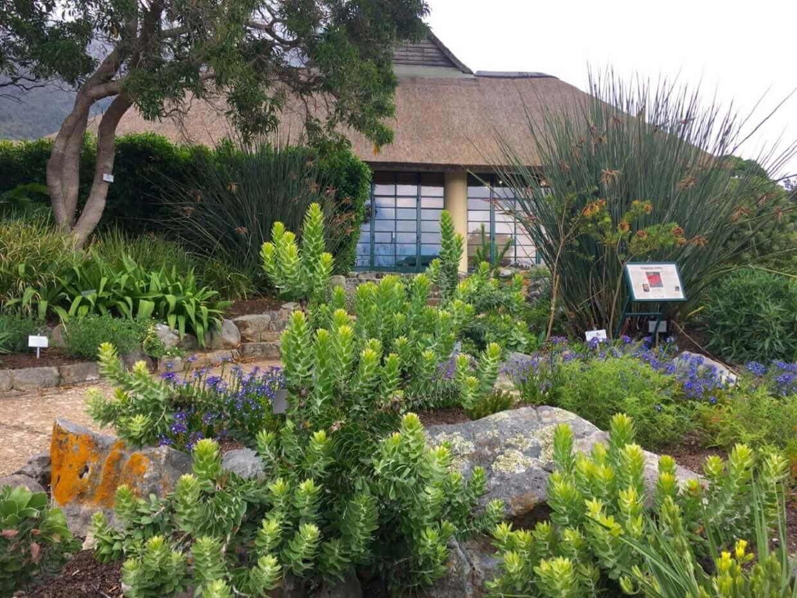

Оказывается, один из крупнейших ботанических садов в мире находится именно в ЮАР — это Кирстенбош (находится в окрестностях Кейптауна, у подножья Столовой горы, на ее восточном склоне).
Площадь Национального ботанического сада Кирстенбош (Kirstenbosch National Botanical Garden) – порядка 530 гектаров.
Впрочем, непосредственно сад занимает всего 40 гектаров, остальная территория занята естественным мелколесьем и горами, здесь проживает множество птиц и животных.
Большая часть представленных в ботаническом саду растений (около 7 тысяч видов) – эндемики Южной Африки, достаточно редкие и уникальные представители флоры этого континента.
Основан ботанический сад был еще в 1913 году, главной целью создания такого уникального объекта стало сохранение редких растений юга Африки, чья среда обитания уничтожалась новыми поселенцами.
Место расположения Кирстенбоша – центр Капской области, так называемый Мыс Флоры, носит еще одно, «говорящее» название – Королевство цветов.
С незапамятных времен, еще до прибытия европейских поселенцев в 17 веке, здесь выращивали фрукты и другие культурные растения.
Удивительно, но здесь на африканской земле почвы каменистые и бедные питательными веществами, но здесь прекрасно себя чувствуют твердолиственные вечнозеленые кустарники и низкорослые деревья

К достопримечательностям ботанического сада Кирстенбош относятся Большой зимний сад, Ароматный сад и уникальная подвесная аллея Boomslang, длиной 427 м со смотровыми площадками.

Кирстенбош примечателен своими тропами. По некоторым устремляются путешественники на вершины Столовой горы. Одна из них имеет оригинальное название "Скелет ущелья".
Примечательно, что силуэт Столовой горы изображен на флаге Кейптауна.
Вид на Кейптаун со Столовой горы:
ВВЕРХ